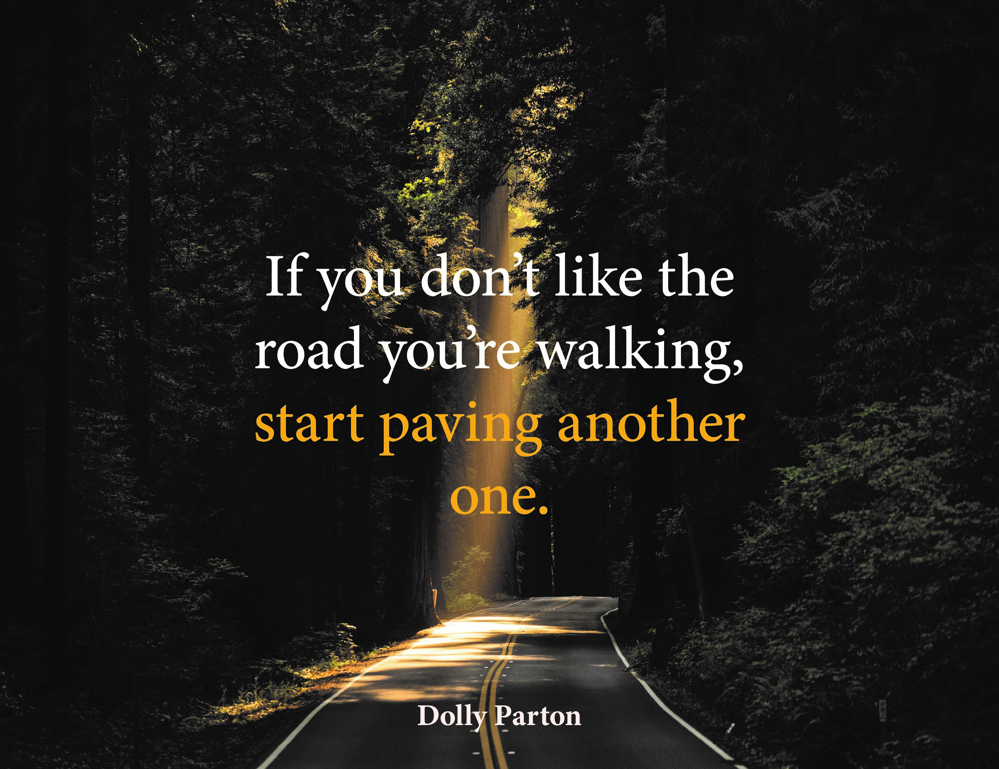

This is one part of the Quote Posters.

This is the second part of the Quote Posters.
These were both done in Illustator and the Quote is from Dolly Parton. I chose this quote because I feel that it has meanning to everyone who doesn't like where they are now. There is always new routes to take and that's why I chose to make these posters. The first poster shows text in from of an empty Forest picture I found because I felt it shows what the quote is talking about, Taking a new path. For the second poster I make a road from the brush tool and made part of the like curvy to signify a bumpy road, and a straight road to show a new fresh start. I also put red and green rectangles at the end of the roads to signify an end and beginning.